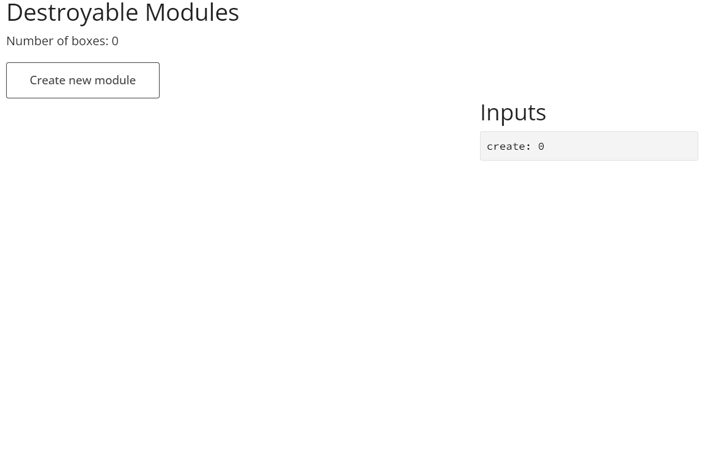

introduction.RmdAs shiny applications become larger and more complex, there are requirements to dynamically show inputs, results and even entire modules. Functionality exists to be able to dynamically update the UI and server, however when removing the UI, traces of the input are still available throughout the application which may cause some unexpected behaviour. The aim of {shiny.destroy} is to eliminate all traces of the removed UI in the shiny application, providing the assurance that only the required observers and outputs are rendered after removal.
The front-end part of shiny inputs can easily be removed by using the
removeUI function, however this does not impact the server
side, where the input is still accessible.
library(shiny)
ui <- fluidPage(
numericInput("number", "Select number:", 5L, 1L, 10L),
actionButton("delete", "Remove input"),
p("Selected number:", textOutput("number_out", inline = TRUE))
)
server <- function(input, output, session) {
output$number_out <- renderText(input$number)
observeEvent(input$delete, removeUI("#number"))
}
shinyApp(ui, server)With removeInput, both the front and back end remove the
input, and any observer or output that references the removed input will
be updated. Whilst the trick of using
.subset2(input, "impl")$remove(id) is known to remove the
input, it does not trigger anything. Within the input
object, the names are all stored within the .namesOrder and
needs to be removed from here too.
After the input has been removed, the session needs to be aware that the input has been removed, otherwise nothing will be updated. This is where the invalidation of the various values is required, referencing the names and value dependency environments within the input object.
With all this resolved, the input is now fully removed from the shiny instance.
library(shiny)
library(shiny.destroy)
ui <- fluidPage(
numericInput("number", "Select number:", 5L, 1L, 10L),
actionButton("delete", "Remove input"),
p("Selected number:", textOutput("number_out", inline = TRUE))
)
server <- function(input, output, session) {
output$number_out <- renderText(input$number %||% "input unavailable")
observeEvent(
input$delete,
removeInput("number", selector = ":has(> #number)")
)
}
shinyApp(ui, server)Outputs can be removed in shiny applications by using a combination
of removeUI and assigning NULL to the relevant
output ID server-side; removeOutput is a wrapper for both
operations. When assigning the output NULL, rather than
removing the output entirely, it instead creates a reactive using
req(FALSE) so that the output will never be updated.
library(shiny)
library(shiny.destroy)
ui <- fluidPage(
numericInput("bins", "Number of bins:", min = 1L, max = 50L, value = 30L),
actionButton("delete", "Remove output"),
plotOutput("distPlot", height = "200px", width = "400px")
)
server <- function(input, output, session) {
output$distPlot <- renderPlot({
x <- faithful[, 2L]
bins <- seq(min(x), max(x), length.out = input$bins + 1L)
hist(
x,
breaks = bins,
col = "darkgray",
border = "white",
xlab = "Waiting time to next eruption (in mins)",
main = "Histogram of waiting times"
)
})
observeEvent(input$delete, removeOutput("distPlot"))
}
shinyApp(ui, server)In larger shiny applications, modules are beneficial to reduce the
application down into smaller, reusable chunks. There are situations
where these modules can be dynamically added to the application, but
also want to be removed. By using removeUI, we can remove
the HTML of the module, however there are still a load of server-side
processes that will be running even with the module “removed”.
{shiny.destroy} makes sure that any trace of the module is no longer
available within the application.
shiny::runExample(
"01_boxes",
package = "shiny.destroy"
)
The inputs and outputs are removed in the same way as an individual
input or output, however additional objects in a module need to be
addressed to properly destroy the module. observe and
observeEvent are eager, and execute whenever any of the
triggers are updated. If you assign an observer to a variable, you can
see that it too is an R6 object with several methods. To prevent an
observer from evaluating, you can use the $destroy()
method.
library(shiny)
ui <- fluidPage(
actionButton("update", "Increase"),
actionButton("stop", "Stop increasing"),
p("Updates:", textOutput("number_out", inline = TRUE))
)
server <- function(input, output, session) {
clicks <- reactiveVal(0L)
update_obs <- observeEvent(input$update, clicks(clicks() + 1L))
observeEvent(input$stop, update_obs$destroy())
output$number_out <- renderText(clicks())
}
shinyApp(ui, server)When it comes to modules, these triggers can potentially be inputs or
reactive values that are passed into the module. Removing a module from
the shiny session won’t disable these observers, so in order for
destroyModule to remove these observers, the module
function needs to be passed into
makeModuleServerDestroyable. This assigns all observers to
the user session data so that when the module is destroyed, the
observers can be too.
Whilst the module code can be updated so that the observers can be
destroyed with a single click, it is hard to find sub-modules called
within the module code. Therefore these should be included as arguments
to the server-side module, using
makeModuleServerDestroyable, so that these observers will
be destroyed too.